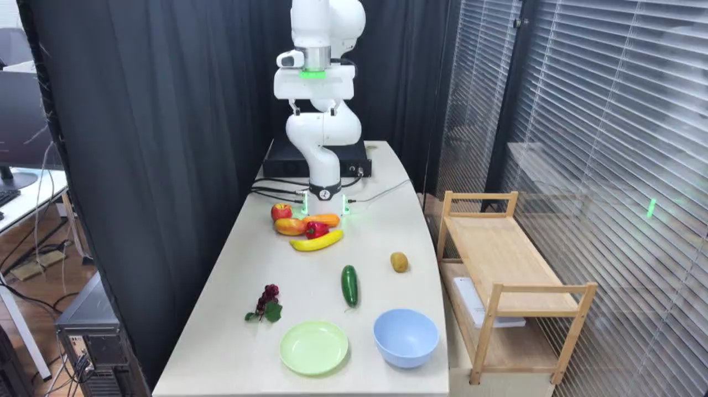

TAVP · 001_franka_collect_fruits_standard_success
Franka collect fruits standard success

Annotation
From the dedicated visual review of this video (concise_action_v1). Plain text · JSON
Chronology
| Frames | Observation |
|---|---|
| 0–380 | The robot lowers its open gripper from the high starting position, passes forward above the rear produce cluster, and approaches the elongated green object in the middle of the table. |
| 381–690 | The gripper descends around the upper part of the green object, closes and makes small positioning movements while the object remains on or very near the tabletop. |
| 691–880 | The robot lifts the green object clear of the table, holding it tilted downward, then transports it forward and right toward the blue bowl. |
| 881–949 | The robot lowers the green object inside the blue bowl and opens its fingers; the object rotates from a steep tilt to lie across the bowl interior. |
| 950–1050 | The green object settles horizontally in the blue bowl. After a short pause the open gripper lifts visibly clear of it. |
| 1051–1290 | The empty gripper rises and moves back toward the small yellow-brown oval object behind the bowl, then descends around it. |
| 1291–1520 | The fingers close around the oval object, with a pause and slight adjustment close to the tabletop. |
| 1521–1680 | The robot lifts the oval object and carries it forward to the blue bowl already containing the green object. |
| 1681–1800 | The oval object is lowered into the rear-right area of the bowl and released beside the green object. |
| 1801–2009 | Both objects remain in the blue bowl while the open gripper pauses, rises and retracts above the table; no additional object is collected. |
Uncertainties
- The exact identity of the small yellow-brown oval object is visually ambiguous; it is described by appearance rather than named as a particular fruit.
- The produce appears to be props; the elongated green object is identified by its cucumber-like shape, not confirmed as a real cucumber.
Complete review record action_review.json
{
"video_id": "001",
"review_method": "Visual inspection of every second decoded frame across the entire MP4 plus native-resolution transition frames, followed by native initial PNG",
"review_source_video": "/Users/nijiachen/Downloads/Robotvideo/TAVP/001_franka_collect_fruits_standard_success/original/video.mp4",
"source_frame_count": 2010,
"source_fps": 30.0,
"inspected_frame_stride": 2,
"inspected_sampled_frame_count": 1005,
"reviewed_contact_sheets": [
"sheet_001.jpg",
"sheet_002.jpg",
"sheet_003.jpg",
"sheet_004.jpg",
"sheet_005.jpg",
"sheet_006.jpg",
"sheet_007.jpg",
"sheet_008.jpg",
"sheet_009.jpg",
"sheet_010.jpg",
"sheet_011.jpg",
"sheet_012.jpg",
"sheet_013.jpg",
"sheet_014.jpg",
"sheet_015.jpg",
"sheet_016.jpg"
],
"native_detail_frames": [
150,
380,
440,
460,
650,
680,
700,
740,
900,
930,
940,
950,
1000,
1020,
1040,
1050,
1060,
1200,
1300,
1400,
1500,
1580,
1690,
1740,
1810,
1870,
1910,
2009
],
"initial_scene": "A fixed elevated oblique view looks along a pale rectangular table toward a white robot arm at the rear. Its open black two-finger gripper and white wrist housing with green tape are raised near the upper center. A glossy elongated dark-green cucumber-shaped object lies lengthwise in the middle, with a small yellow-brown oval object behind and to its right. Purple grapes with green leaves lie to the left. An empty pale-green shallow dish is at the front left and an empty light-blue bowl at the front right. Red, yellow and orange produce props, including a banana, are clustered beside the robot base. Dark curtains occupy the back and left, window blinds and a wooden two-tier cart are on the right.",
"observed_sequence": [
{
"start_frame": 0,
"end_frame_inclusive": 380,
"action": "The robot lowers its open gripper from the high starting position, passes forward above the rear produce cluster, and approaches the elongated green object in the middle of the table.",
"confidence": "high"
},
{
"start_frame": 381,
"end_frame_inclusive": 690,
"action": "The gripper descends around the upper part of the green object, closes and makes small positioning movements while the object remains on or very near the tabletop.",
"confidence": "high"
},
{
"start_frame": 691,
"end_frame_inclusive": 880,
"action": "The robot lifts the green object clear of the table, holding it tilted downward, then transports it forward and right toward the blue bowl.",
"confidence": "high"
},
{
"start_frame": 881,
"end_frame_inclusive": 949,
"action": "The robot lowers the green object inside the blue bowl and opens its fingers; the object rotates from a steep tilt to lie across the bowl interior.",
"confidence": "high"
},
{
"start_frame": 950,
"end_frame_inclusive": 1050,
"action": "The green object settles horizontally in the blue bowl. After a short pause the open gripper lifts visibly clear of it.",
"confidence": "high"
},
{
"start_frame": 1051,
"end_frame_inclusive": 1290,
"action": "The empty gripper rises and moves back toward the small yellow-brown oval object behind the bowl, then descends around it.",
"confidence": "high"
},
{
"start_frame": 1291,
"end_frame_inclusive": 1520,
"action": "The fingers close around the oval object, with a pause and slight adjustment close to the tabletop.",
"confidence": "high"
},
{
"start_frame": 1521,
"end_frame_inclusive": 1680,
"action": "The robot lifts the oval object and carries it forward to the blue bowl already containing the green object.",
"confidence": "high"
},
{
"start_frame": 1681,
"end_frame_inclusive": 1800,
"action": "The oval object is lowered into the rear-right area of the bowl and released beside the green object.",
"confidence": "high"
},
{
"start_frame": 1801,
"end_frame_inclusive": 2009,
"action": "Both objects remain in the blue bowl while the open gripper pauses, rises and retracts above the table; no additional object is collected.",
"confidence": "high"
}
],
"multi_step": true,
"selected_segment": {
"start_frame": 0,
"end_frame_exclusive": 1051,
"reason": "Retains the first complete independent pick-and-place, including the green object settling and the gripper lifting clear, before the approach to the second oval object.",
"terminal_state": "The elongated green object rests horizontally inside the blue bowl; the fingers are open and raised clear above the bowl. The yellow-brown oval object and the other produce remain on the table."
},
"full_sequence_prompt": "The robotic arm places the green cucumber-shaped object inside the blue bowl, then picks up the yellow-brown oval object and places it in the same bowl. Keep the camera fixed; preserve robot geometry, physically valid joint motion, and normal gripper opening and closing.",
"world_model_prompt": "The robotic arm picks up the green cucumber-shaped object and places it inside the blue bowl. Keep the camera fixed; preserve robot geometry, physically valid joint motion, and normal gripper opening and closing.",
"uncertainties": [
"The exact identity of the small yellow-brown oval object is visually ambiguous; it is described by appearance rather than named as a particular fruit.",
"The produce appears to be props; the elongated green object is identified by its cucumber-like shape, not confirmed as a real cucumber."
],
"evidence_frame_indices": [
0,
440,
740,
940,
1050,
1580,
1810,
2009
],
"prompt_provenance": "visually_authored_from_video_and_initial_frame",
"selected_execution_status": "success",
"prompt_protocol": "concise_action_v1",
"review_source_original_video": "001_franka_collect_fruits_standard_success/original/video.mp4",
"review_source_crop_rectangle": null
}